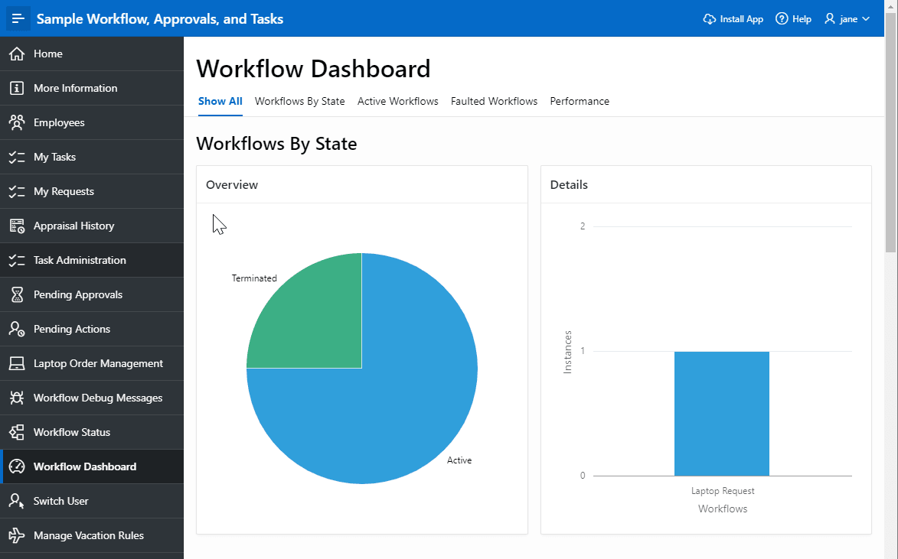

20.1.4 About the Workflow Console, Workflow Details, and Workflow Dashboard
The Workflow Console displays all workflows for a given report context. The Workflow Details shows details for a specific workflow instance. The Workflow Dashboard shows analytics for all workflows in a given report context.
When you create the Workflow Console using the Create Page Wizard, the wizard creates two pages in the application: an overview page with all the workflows for the given report context, and a details panel that opens when a user selects a workflow from the overview page. If you select the Include Dashboard Page option, the wizard also creates a dashboard page with charts that compare workflow performance and workflow states in the given report context.
You can further customize all three pages with Page Designer.
The Workflow Console Page
- My Workflows, for workflow owners
- Admin Workflows, for workflow administrators
- Initiated by Me, for workflow initiators
The Workflow Details Page
- activity instances and their states
- when an activity was started, completed, retried, faulted, or terminated
- workflow instance variables, which can be edited by workflow administrators
Tip:
The Workflow Details page showsVARCHAR2representations of the variables. ForCLOBvariables, the workflow details page displays the section of theCLOBthat is accommodated within theVARCHAR2limit. - workflow instance parameters
- an audit history of the workflow instance including, if applicable, the parent workflow and parent activity instance
- (optional) a read-only visual representation of the workflow
- (invoked workflows only) a button to navigate to the details of the parent workflow
The workflow details page includes a Workflow Diagram region. The workflow diagram region is a read-only visual representation of the workflow instance. It shows the progress of the workflow instance and the activities already completed.
The Workflow Dashboard Page
- Workflows by State - Shows a pie chart with the distribution of workflows by state. Clicking on a particular state shows the number of workflow instances currently in that state.
- Active Workflows - Shows the number of workflows in an active or suspended state. Clicking on a particular workflow shows the number of workflow instances waiting at a particular activity.
- Faulted Workflows - Shows the number of workflows in a faulted state. Clicking on a particular workflow shows the number of workflow instances that are faulted at a given activity.
- Performance - Shows the average completion time for workflows. Use the Time Unit dropdown list to change the chart's time unit.

Description of the illustration workflow_dashboard_example.png
Parent topic: About Workflows